Room identification, restroom signs, braille plaques, accessible route markers, and complete ADA wayfinding systems for businesses across Silicon Valley. Gemini authorized. Code-compliant. Installed right.
The Americans with Disabilities Act sets specific requirements for interior signage in commercial buildings — including raised tactile characters, Grade 2 braille, correct mounting heights, non-glare finishes, and minimum contrast ratios between text and background. These aren't suggestions. Buildings that fail ADA signage compliance are exposed to complaints, lawsuits, and required retrofits — all at significantly higher cost than getting it right the first time.
In California, requirements are stricter than federal ADA standards. The California Building Code (CBC) Title 24 adds additional provisions that affect sign placement, pictogram requirements, and character sizing. If your building permits were pulled under Title 24, your signage needs to comply with California's version — not just the federal baseline.
We supply and install ADA-compliant signage through Gemini Sign Products — the industry standard for commercial tactile and braille signs. Every sign is manufactured to ADA and CBC specifications, and we install at correct mounting heights per CBC §11B-703.
Any room that is not open to the general public but is used by occupants must have a tactile sign at its door. This includes conference rooms, offices, restrooms, stairwells, mechanical rooms, and any room identified by a room number or name. If you're building out a new tenant suite in San Jose, a full ADA sign package is required before the City issues a Certificate of Occupancy.
California's Building Code goes further than federal ADA. Here's what Title 24 requires for commercial signage in San Jose.
All permanent room and facility signs require raised tactile characters (minimum 1/32" relief) in uppercase sans-serif lettering between ⅝" and 2" in height. Grade 2 contracted Braille is required below the tactile text. Characters must be separated from Braille by at least ⅜".
Tactile signs must be mounted on the latch side of the door. The baseline of the lowest tactile character must be between 48" and 60" above the finished floor. Signs on both sides of double doors are mounted on the right-hand door.
Characters and backgrounds must have a non-glare finish. Light characters on a dark background or dark characters on a light background — a minimum 70% contrast ratio is required. Eggshell, matte, or satin finishes are standard. High-gloss surfaces are non-compliant.
California Title 24 requires specific geometric shapes on single-occupancy restroom doors: an equilateral triangle (point up) for men, a circle for women, and a triangle superimposed on a circle for gender-neutral or all-gender restrooms — in addition to tactile text and Braille.
Where pictograms are used (restroom, accessible route, exit), the pictogram field must be at least 6" high. The International Symbol of Accessibility (ISA) is required on accessible parking, entrances, and restrooms. Pictograms must have a non-glare finish and meet contrast requirements.
Any room not open to the general public but used by occupants requires a tactile sign: conference rooms, private offices, restrooms, stairwells, mechanical rooms, storage rooms, and any room identified by number or name. New tenant build-outs in San Jose require a complete ADA sign package before the City issues a Certificate of Occupancy.
We audit your space before quoting. Every ADA sign project starts with a room-by-room compliance review — we identify which doors require tactile signs, flag any existing non-compliant signs, and quote the full package so there are no surprises at inspection.
For facilities that need more than individual room signs — campuses, medical buildings, multi-tenant offices, and corporate headquarters — we supply and install complete Vista System wayfinding programs.
Vista System is a modular, ADA-compliant architectural sign system used in hospitals, universities, tech campuses, and government facilities worldwide. The system covers directional signs, room identification, directories, overhead blade signs, freestanding kiosks, and illuminated wayfinding — all in a consistent architectural language that meets ADA and CBC Title 24 requirements.
As a Vista System authorized dealer, Clear Line Signs designs, supplies, and installs complete wayfinding programs for Silicon Valley facilities — from a single-floor office build-out to a multi-building campus. Inserts are field-replaceable, so tenant changes, room renumbering, and directory updates don't require replacing the hardware.
Room identification, restroom signs, wayfinding systems, and full tenant suite sign packages.
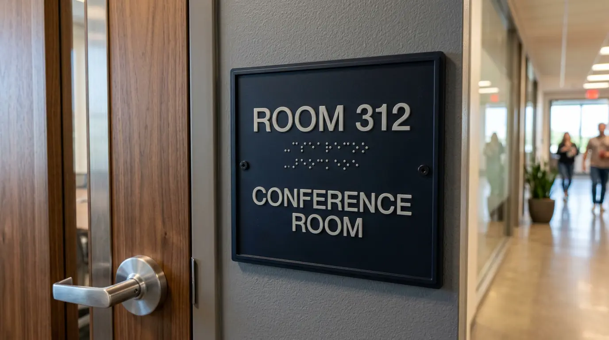
Room ID · Office Suite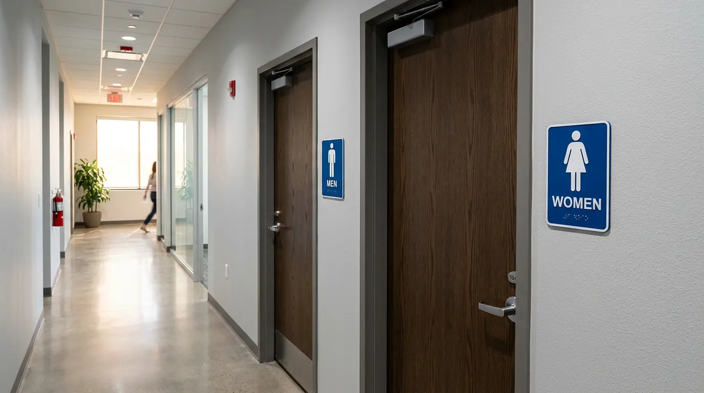
Restroom Signs · Commercial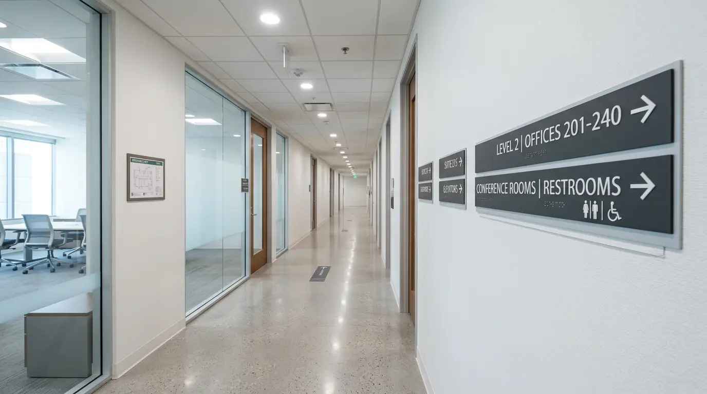
Wayfinding · Corporate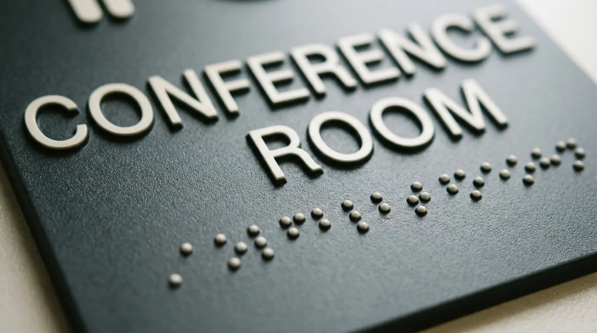
Braille & Tactile · Detail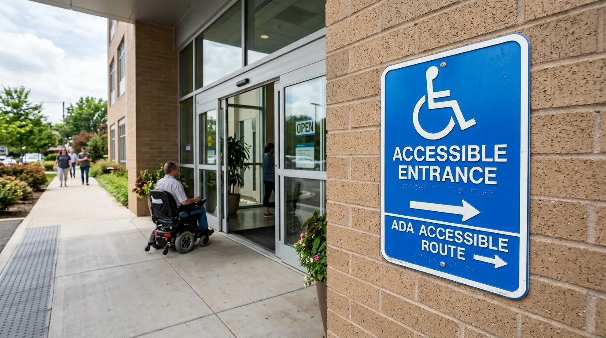
Accessible Route · DirectionalA compliant interior sign program covers more than just restroom doors. Here's the full scope of what's typically required.
Tactile signs with raised characters and Grade 2 braille for all non-public rooms — conference rooms, offices, mechanical rooms, storage areas, and any room identified by a name or number. Mounted at the latch side of the door, 60" centerline from finished floor per CBC.
Required · All CommercialMen's, women's, all-gender, and accessible restroom signs with ISA pictograms, tactile text, and braille. Available in a range of finishes — dark background with light characters, custom colors, or brushed metal — all manufactured to ADA and Title 24 specifications.
Required · All BuildingsDirectional signs indicating accessible paths of travel, including the International Symbol of Accessibility (ISA). Required at building entrances and along any route where the accessible path is not the same as the primary circulation route.
Required · Public AccessFloor level identification signs inside stairwells, including tactile floor numbers and raised directional characters. Required in multi-story buildings — typically placed at each floor landing, 60" centerline height at the door jamb.
Required · Multi-StoryNon-tactile directional signs pointing to restrooms, exits, elevators, and accessible routes — the complement to required tactile signs. For complete wayfinding system design across a building or campus, see our wayfinding signs page.
Wayfinding · All BuildingsCustom tactile signs for unique room types, building directories, elevator floor panels, and specialty applications. Available in flat cut metal with raised print, photopolymer resin, or Gemini's cast aluminum — all with Grade 2 braille produced to spec.
Custom · Premium FinishAs a Gemini authorized reseller, we supply ADA signs manufactured to the highest commercial standard — with a lifetime material guarantee and complete braille accuracy.
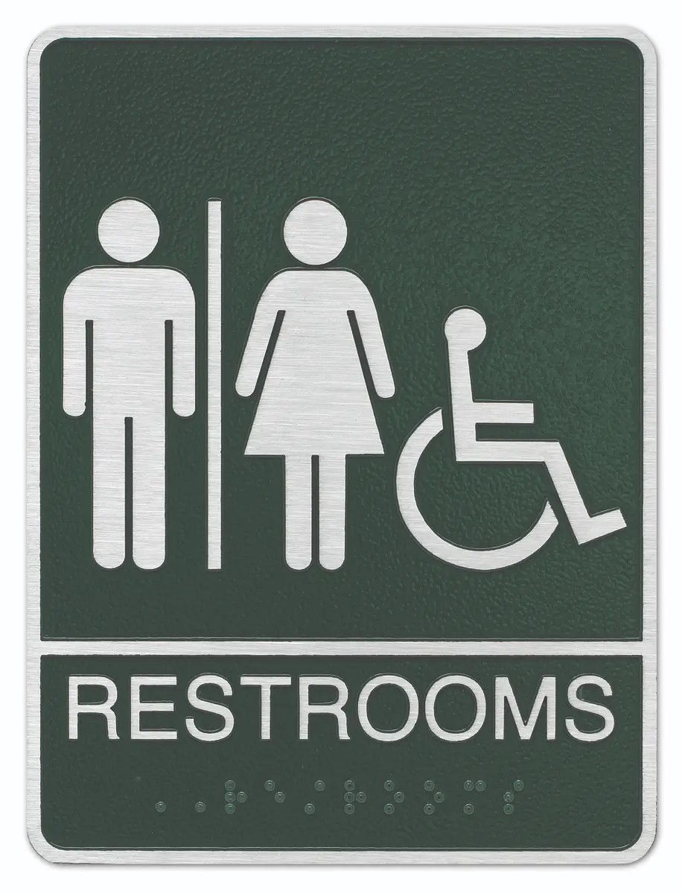
Restrooms Sign
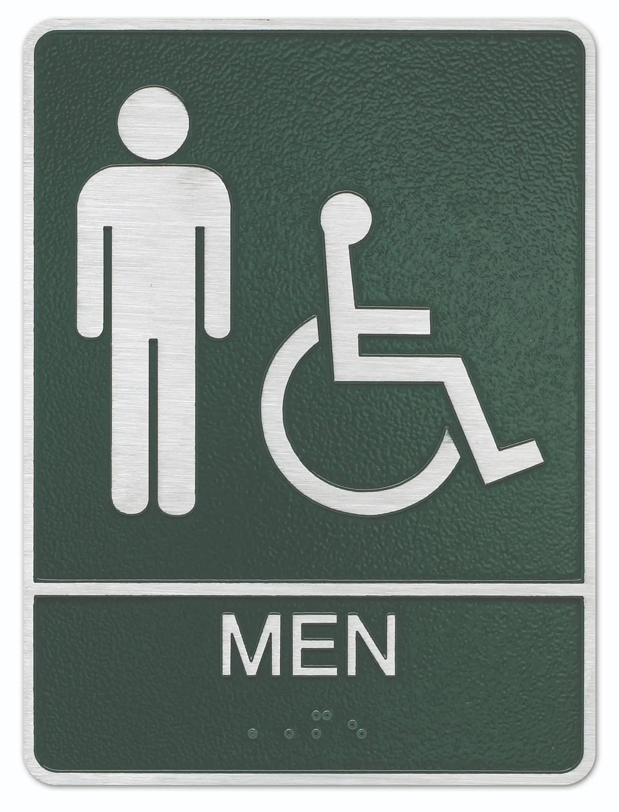
Men's Restroom
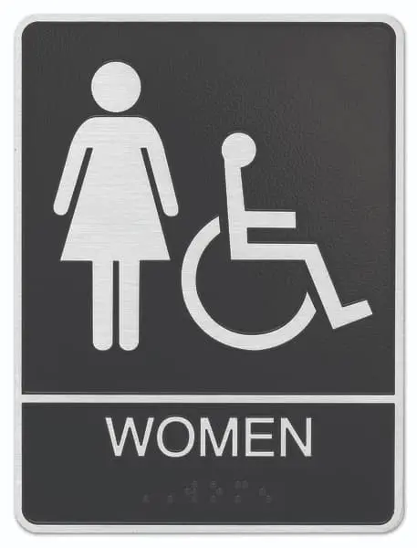
Women's Restroom
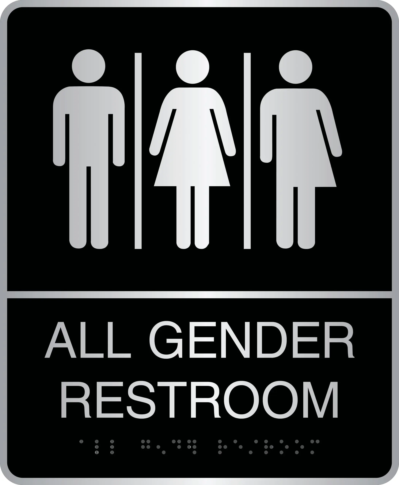
All Gender Restroom
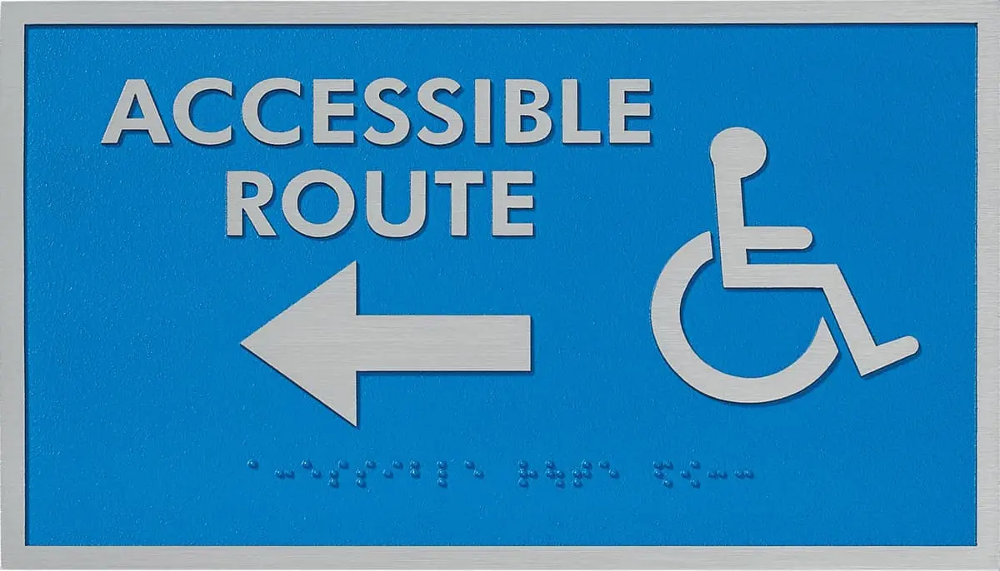
Accessible Sign
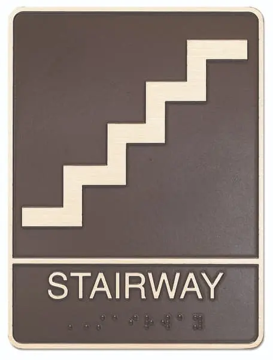
Stairway Sign
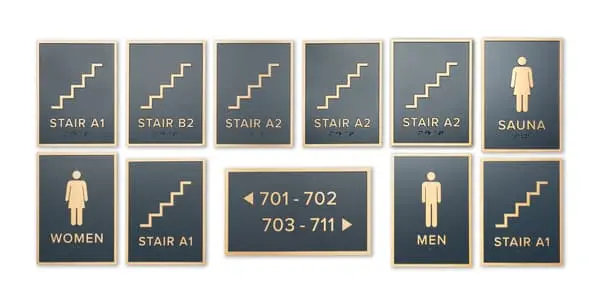
Braille Plaque
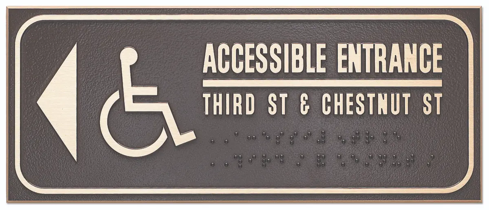
Custom Accessible
Gemini ADA signs are available in multiple color combinations, custom room names, and premium finishes including brushed metal laminates. All products carry Gemini's lifetime material guarantee.
For projects that go beyond individual room signs — multi-floor wayfinding, lobby directories, campus navigation, and architectural sign systems — we supply and install Vista System products. Vista is a global leader in modular wayfinding signage used in hospitals, corporate campuses, universities, and government facilities worldwide.
Vista's ADA acrylic line delivers Grade 2 braille, tactile characters, and required pictograms in a premium architectural frame. Available in multiple color combinations and finishes — designed to meet ADA and CBC §11B-703 requirements while looking good in upscale interiors.
The Vista Nova system handles wall signs, flag signs, suspended signs, and directories from a single modular platform. Inserts are interchangeable — ideal for tenant turnover in multi-tenant buildings where room names and suite numbers change regularly.
For a clean, architectural look without visible frames — Vista Sharp delivers a sleek frameless sign system for modern corporate offices and healthcare environments. Same modular flexibility, minimal visual profile.
We handle the full scope — facility audit, sign schedule, Vista System specification, permit documentation where required, fabrication, and installation. One team from first call to final sign mounted.
ADA signage isn't a commodity purchase — specification errors mean non-compliance, which means exposure. Here's why getting it right matters and how we ensure it.
We specify ADA signs to California Building Code Title 24 — not just federal ADA minimums. California's requirements are stricter in several areas including mounting heights, character proportions, and pictogram field sizes. Every sign package we supply is specified to CBC §11B-703 compliance.
We source ADA signs through Gemini Sign Products — the industry's most trusted commercial ADA sign manufacturer. Braille accuracy, tactile character depth, and finish quality are guaranteed. Every Gemini product carries a lifetime material warranty and is manufactured to ADA specifications.
New tenant buildout? We handle the complete ADA sign scope — room ID signs for every room, restroom signs, exit and stairwell signs, accessible route markers, and any custom room names your tenant requires. One quote, one order, one install. Coordinated with your contractor's punch-list schedule.
The San Jose Chamber of Commerce ADA grant program can fund up to $25,000 in compliance improvements for eligible businesses. We're familiar with the program and can provide the documentation and itemized quotes needed to support a grant application. Ask us about it on your first call.
Two tools that help you get organized before we talk — especially useful for new tenant buildouts with multiple rooms.
Need to figure out room names for a new suite? Conference Room A vs. Board Room, Suite 200 vs. Executive Suite — our tool helps you settle the naming conventions before the signs are ordered. Saves time and prevents costly re-orders.
Try the Sign Copy Tool →Complete a brief with your floor plan, room count, preferred finish, and timeline — and we'll put together a complete ADA sign package quote with quantities and pricing for each sign type required.
Start Your Design Brief →ADA signage is required across virtually all commercial building types. Here's who we work with most frequently.
Complete tenant suite packages for new buildouts in San Jose's office parks and tech campuses — every room, every door, every stairwell, coordinated with contractor schedules.
ADA compliance is especially scrutinized in healthcare settings. We spec full medical office packages including accessible restroom signs, exam room IDs, waiting area wayfinding, and HIPAA-adjacent privacy signage.
Restroom signs, accessible entrance markers, and any tactile signs required for your certificate of occupancy. We coordinate with your general contractor to have signs ready at final inspection.
Multi-tenant building ADA sign programs — common area signs, elevator panels, stairwell signs, and restroom signs maintained to code across all floors. We work with property managers on annual compliance reviews.
Large-scale ADA sign programs for educational facilities — classroom IDs, accessible route signs, restrooms, stairwells, and gymnasium/auditorium wayfinding. Built to California DSA standards.
ADA grant funding makes this particularly relevant for non-profits. We help San Jose non-profits and churches navigate the SJ Chamber grant process and spec the compliance package accordingly.
ADA signs are often installed alongside these complementary sign types.
A structured process that ensures your ADA sign package is correct before a single sign is ordered.
We review your floor plan, room schedule, and existing signage to identify all required ADA signs under California Title 24. On-site walkthroughs available throughout Silicon Valley — we document every room, door, and mounting location.
We produce a complete sign schedule — room by room, sign by sign — with quantities, room names, finish selection, and pricing. This document is also what you'll need if you're applying for the SJ Chamber ADA grant.
Signs are manufactured through Gemini Sign Products to your approved spec — correct character proportions, Grade 2 braille, tactile depth, and finish. Quality-checked against your sign schedule before shipment.
Installed at correct mounting heights per CBC §11B-703 — 60" centerline at latch side. We provide an installation record documenting each sign location, which your building inspector or property manager may request.
Based in San Jose, we supply and install ADA compliant signage throughout the South Bay Area.